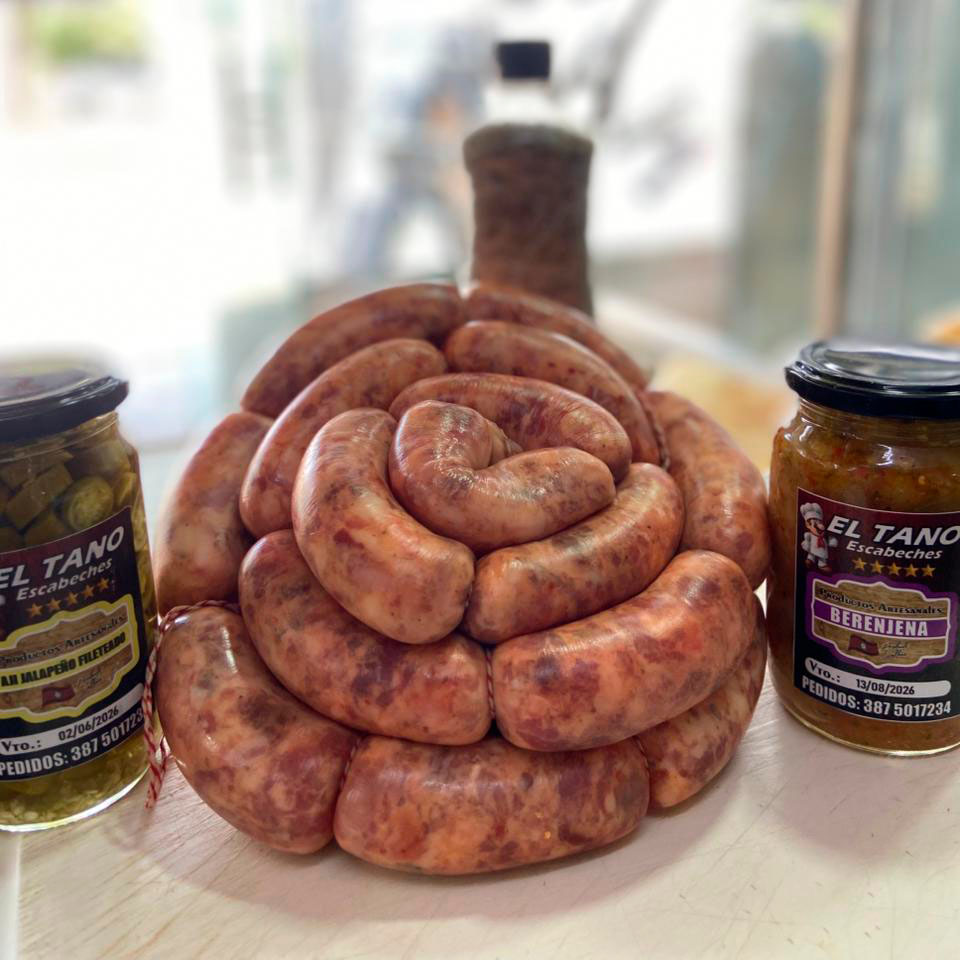
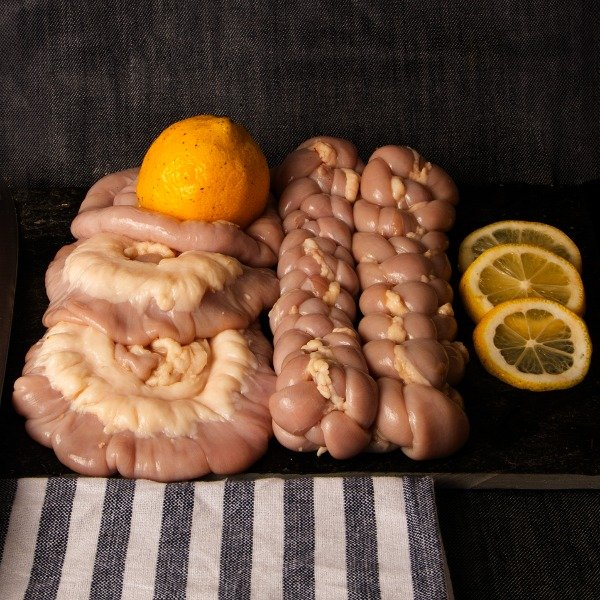
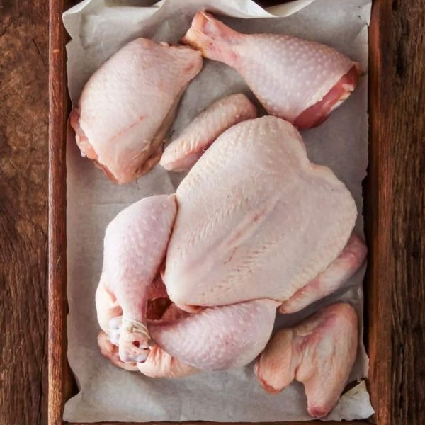
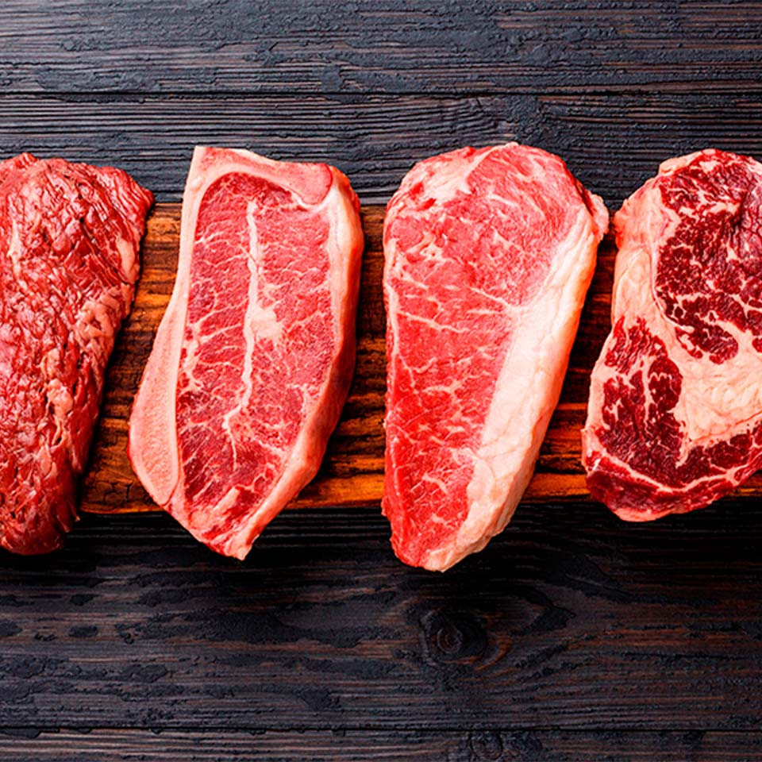
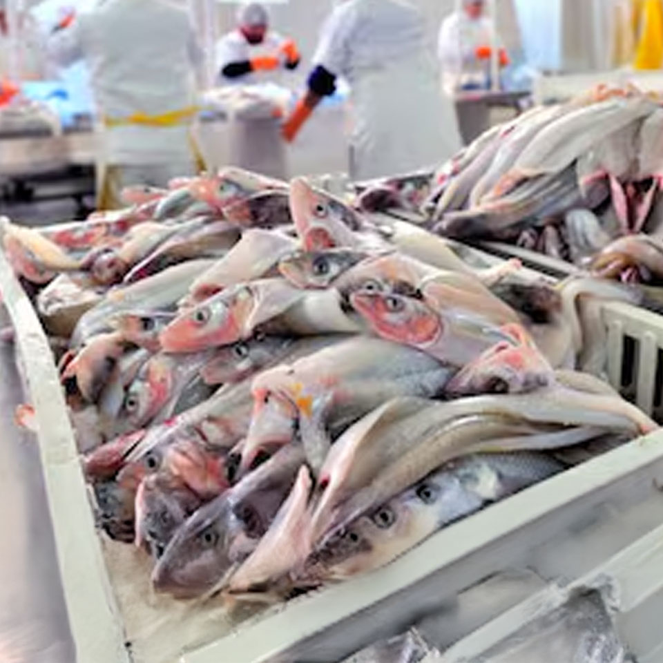
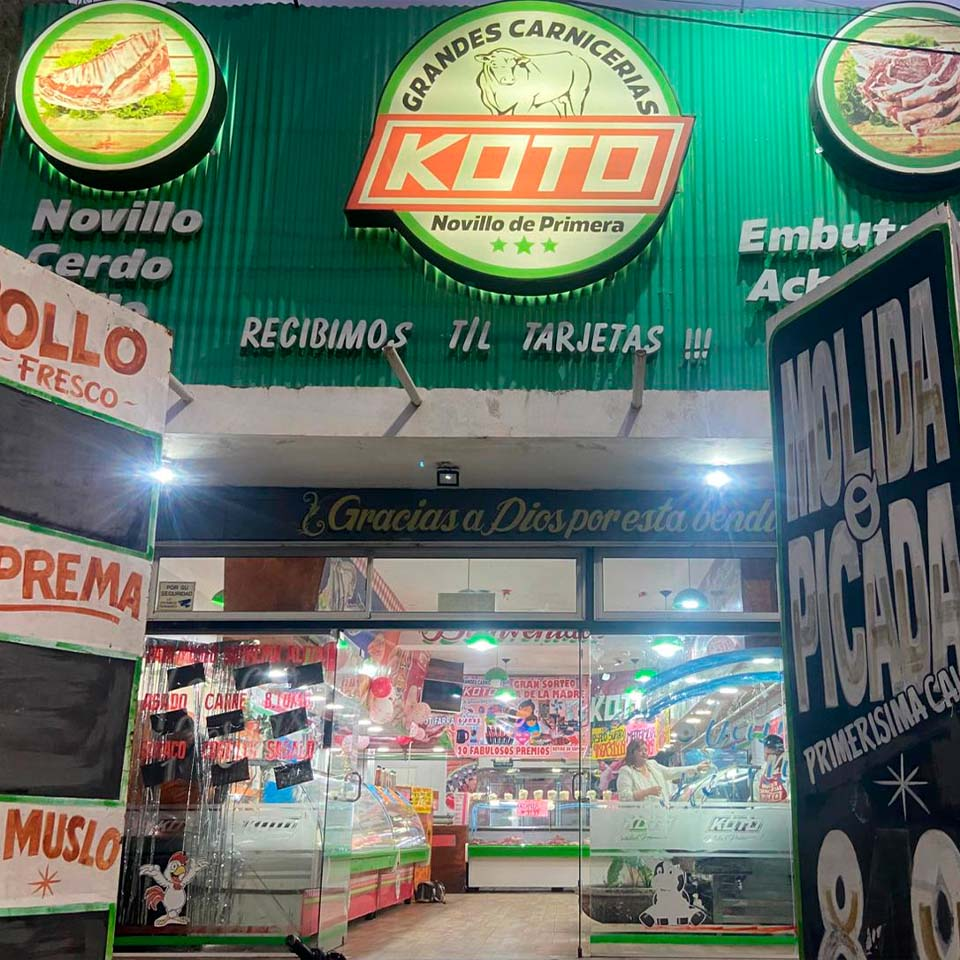
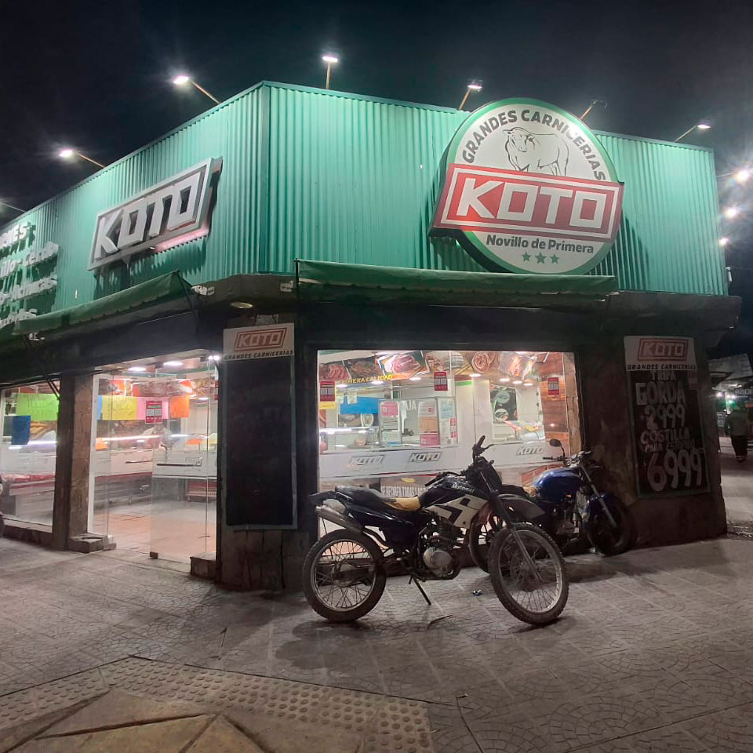
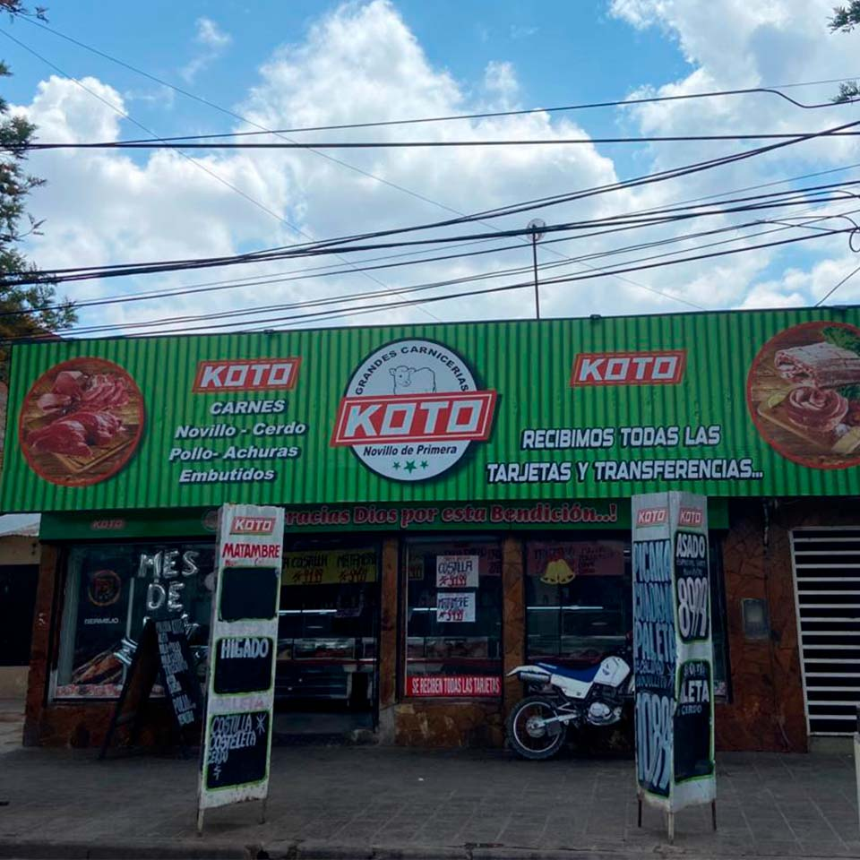

Chorizo criollo, morcilla, especial de cerdo, etc

Chinchulín, entraña, riñón, corazón, molleja, etc

Trozado, pata, muslo, alitas, supremas, etc

Asado y cortes blandos de primera calidad

En Grandes Carnicerías Koto llevamos años de trayectoria ofreciendo lo mejor en carnes seleccionadas.
Somos una empresa familiar salteña, con varias sucursales que crecen día a día gracias a la confianza de nuestros clientes y al amor con el que trabajamos.
Cada corte refleja nuestra pasión por la calidad, la atención personalizada y el compromiso con la frescura que nos distingue desde nuestros inicios.
Cuidamos cada detalle: desde la elección de la mejor materia prima hasta la presentación final, porque creemos que comer bien es parte de vivir bien.
Contamos con cortes de novillito de primera calidad, embutidos, cerdo, pollo y una gran variedad de achuras frescas.
Gracias por elegirnos y ser parte de esta historia que seguimos escribiendo juntos, con el mismo sabor de siempre. ❤



📌Autodromo:
Avenida Autodromo 525
📌Santa Cecilia:
Juan Manuel de Rosas 399 esquina Felipe Varela
📌San Ignacio:
Manzana 15 Casa 15